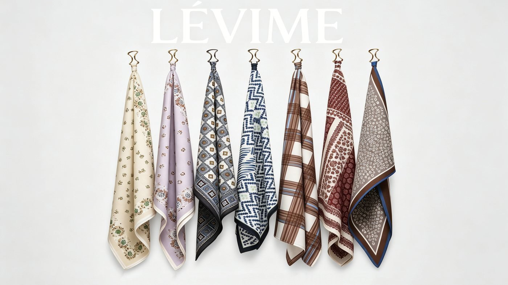
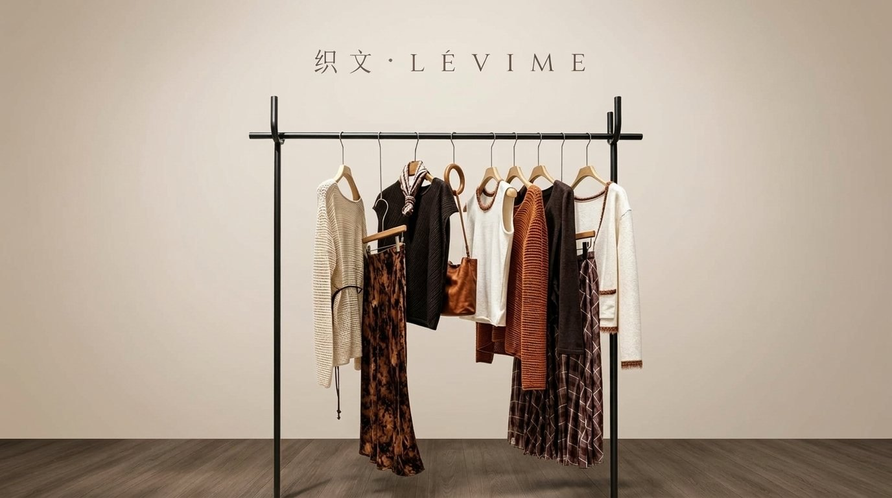
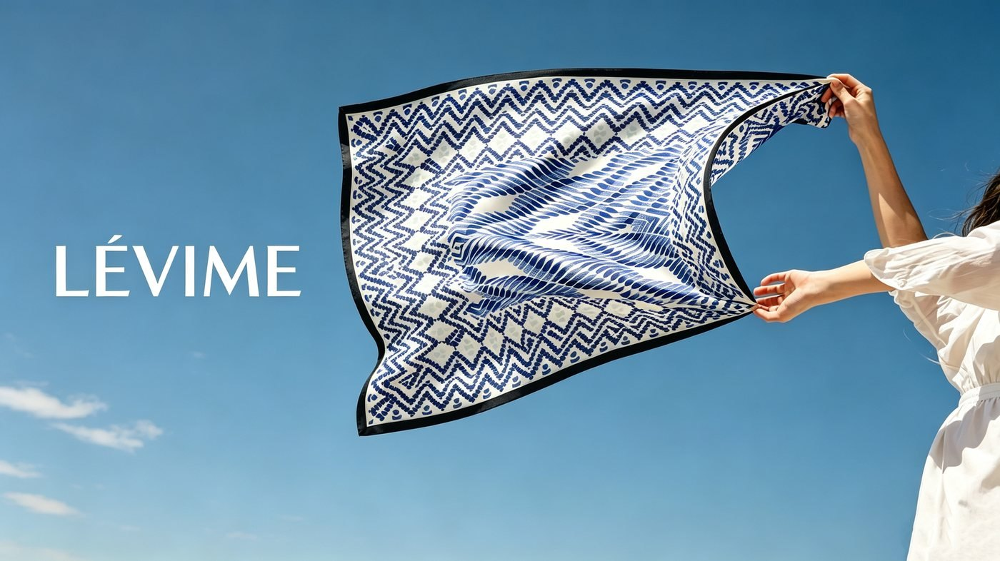
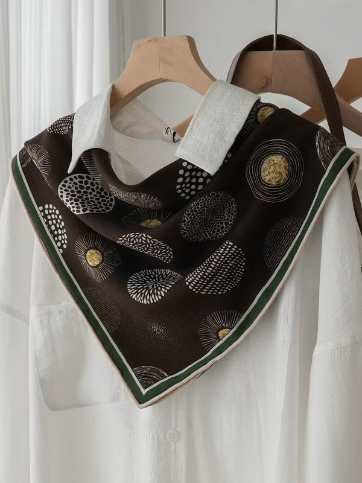
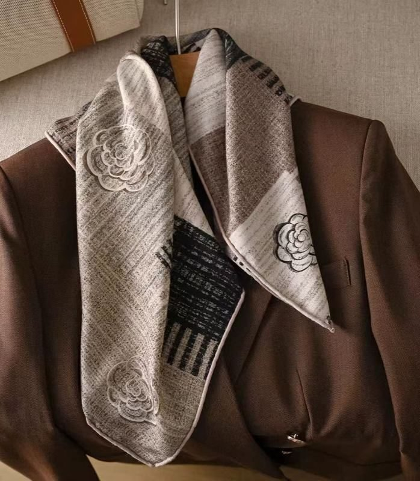
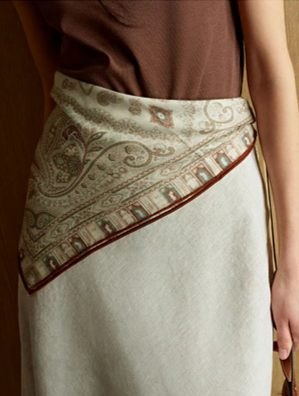
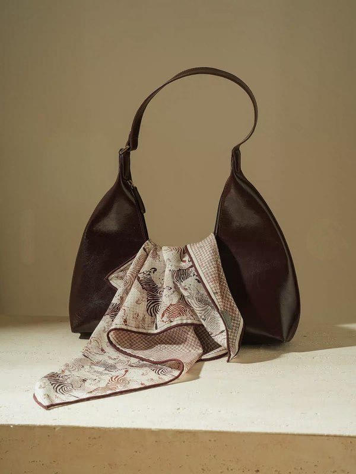

Wool & Silk Double-Sided Scarf Collection
三大风格组别，灵动的穿搭调色盘，总有一款契合你的秋冬格调。
佩斯利密语 / 佩斯利纹 / 四序锦章
经典腰果花纹样，大地复古色系，适配大衣、西装，通勤与礼赠两相宜。
花团蝶舞 / 植物园-蓝 / 素笔寻花 / 梵高花叙 / 百羽栖芳 / 纹瓣花影 / 林间小鹿 / 蝶影花簇 / 苔绿花筏 / 浅林寻径 / 褐藤集 / 红影回廊 / 雾紫雏菊 / 奶油雏菊
版画与油画感花卉植物，低饱和色调，适配针织、衬衫，温柔松弛。
编织山茶 / 繁花几何 / 花边蓝语 / 日光国度 / 斑马逐影 / 拼接飞鸟 / 质感老钱 / 墨纹绽放 / 碎金圆影 / 艺术格调 / 雾灰三角 / 海浪集 / 西西里棋格 / 剑桥格纹
格纹、动物速写、圆点肌理，风格利落现代，松弛利落，通勤日常皆适配。
穿搭里的隐形高级感，每一款都有独立的性格与表达。
不止是颈间装饰，更是整体造型的点睛之笔。

为基础款衬衣增加精致层次

秋冬外套颈间点睛，层次拉满

重塑裙装轮廓，解锁复古穿法

小面积点缀，提升包包质感
从面料配比到手工卷边，每一处细节都经得起推敲。
并非单面印花反面空白。A、B两面独立构图设计，同花异色与AB异花两种工艺并存，翻面即切换一套穿搭表达。
桑蚕丝赋予面料柔和哑光光泽，70%羊毛提供软糯保暖属性。贴肤不刺痒，兼顾垂坠感与挺括度，早秋至深冬皆宜。
人工逐边卷缝锁边，边角弧度圆润流畅，规避机器硬折痕。细节体现面料高级质感，反复佩戴不易脱线。
领巾、肩头披肩、裙装腰饰、包柄装饰、发带束发。一方丝巾，解锁多重造型语言，适配不同场合与心情。
了解产品参数，掌握正确养护方法，让丝巾陪伴更久。
| 尺寸 | 65 × 65 cm |
| 成分 | 30%桑蚕丝 / 70%绵羊毛 |
| 工艺 | 双面异色数码印花 |
| 卷边 | 手工密针卷边 |
| 重量 | 约 45g |
| 适用季节 | 早秋 / 深秋 / 冬日 |
| 产地 | 中国 · 杭州 |